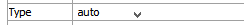
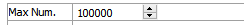
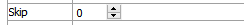
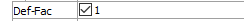

张量（网格单元）绘图项
说明
显示应力或应变的网格单元张量数据。该绘图项最前面的几个属性取决于第一个属性（contingent on the first attribute）（类型）。
属性
类型（Type） 按…着色（Color-By） 等值线/颜色列表（Contour/Color-List） 比例（Scale） 线（Line） 最大数量（Max. Num） 跳过（Skip） 映射（Map） 变形系数（Def-Fac） 透明度（Transparency） 图例（Legend）
类型

选择要绘制的网格单元张量。
类型：从以下选项中选择：“应力”、“应变率”、“应变增量”。
按…着色
选择要从张量中提取用于显示的标量值。将根据需要提供附加属性字段；下表中对这些字段作了说明。
| 统一ⁿ | 最大剪切 | XY |
| 顺序ˡ | 行列式 | XZ |
| 最小值 | 第二偏不变量 | YZ |
| 中间值 | XX 向 | 总量度 |
| 最大值 | YY | 第二不变量 |
| 压力 | ZZ |
| 图例说明： |
| ᴬ除“统一”和“顺序”外，其余选项都带有“等值线”属性 |
| ⁿ不提供附加属性字段 |
| ˡ提供一个“颜色列表”属性 |
颜色列表/等值线
此位置显示的属性是 颜色列表 或 等值线，取决于“按…着色”的选择。详情请参见标准的 颜色列表（color-list） 控件说明和标准的 等值线（contour） 控件说明。
比例

缩放该项目。详情请参见标准的 比例（scale） 控件说明。

线
设置用于项目轮廓的线的属性。详情请参见标准的 线（line） 控件说明。
最大数量

设置要渲染的最大项数。
最大数量：设置数量。
跳过

指定在生成要渲染的张量时跳过每第 n 个网格单元。
跳过：设置跳过值。
映射

将该项映射到新的模型坐标。详情请参见标准的 映射（map） 控件说明。
变形系数

设置变形系数。详情请参见标准的 变形系数（def-fac） 控件说明。
透明度

设置绘图项的透明度。详情请参见标准的 透明度（transparency） 控件说明。
图例

设置绘图图例中该项目的标签。详情请参见标准的 图例（legend） 控件说明。
| 这些内容对您有帮助吗？… | FLAC3D © 2019, Itasca | 原文更新于 2020 年 10 月 8 日 |